Revive la era dorada de la electrónica en Casete
Para los amantes del sonido analógico, Beats or Treats es el espacio recordar casetes que marcaron una época. De Acid House a Máquina Total, pasando por ediciones promocionales únicas como el Super Pop o el mítico Dan’Up, cada cinta cuenta la historia de una generación que vivió la música a todo volumen. Techno, eurodance, house y megamixes inolvidables… Vuelve a sentir la energía de los 80 y 90 en su formato más auténtico: el casete.
-
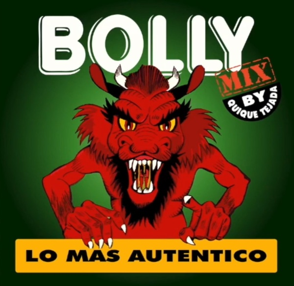
Bolly-mix - 1994
Casete promocional de musica electronica que Bollycao regalaba con algunos de sus productos
-
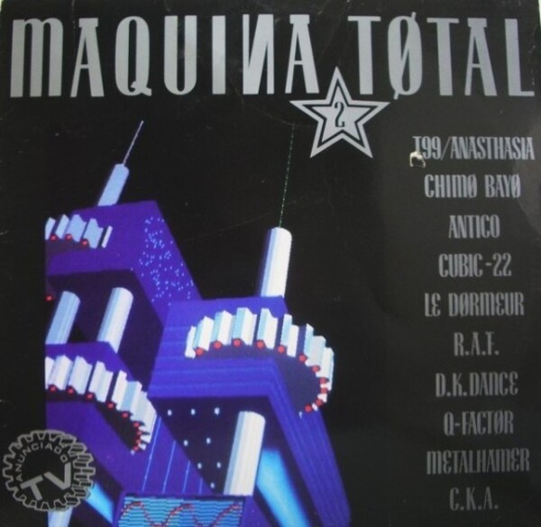
Maquina Total 2 -1991
Recopilatorio de techno, eurodance y house de la época, mezclado por Toni Peret y José Mª Castells bajo el sello Max Music
-
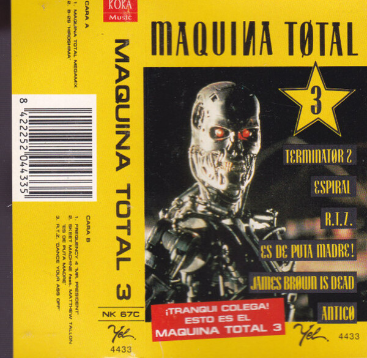
Maquina Total 3 - 1992
Recopilatorio de techno, euro-house y dance de los 90, con un megamix de José Mª Castells y temas icónicos como James Brown Is Dead y Espiral.
-
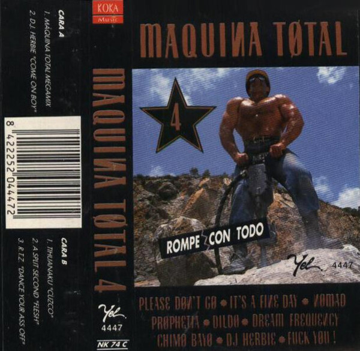
Maquina total 4- 1992
Combina rave, new beat y temas dance muy comerciales, marcando el inicio de una transición hacia sonidos más pop-dance dentro de la saga.
-
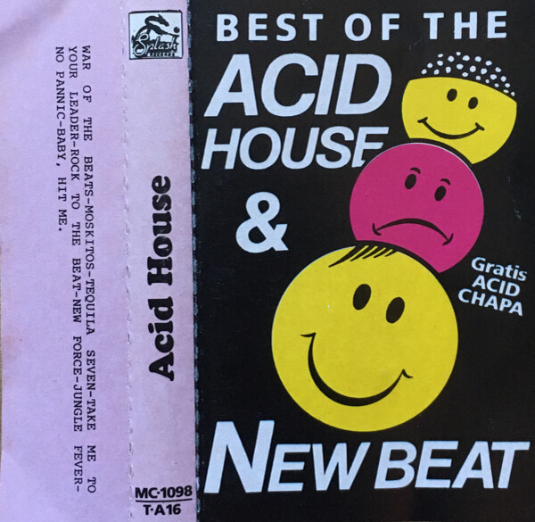
Acid House - 1994
Recopilatorio pionero en España que reúne temas de house ácido, new beat y techno.
-
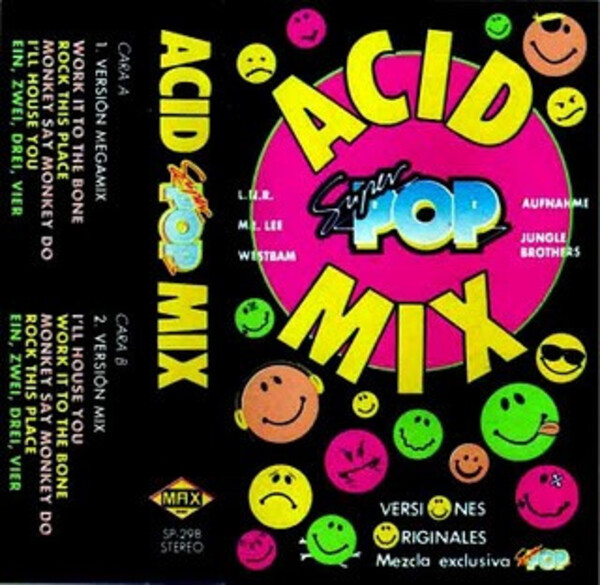
Super Pop Acid Mix - 1987
Cassete regalado de la revista Super Pop con 8 canciones de éxitos de la época
-
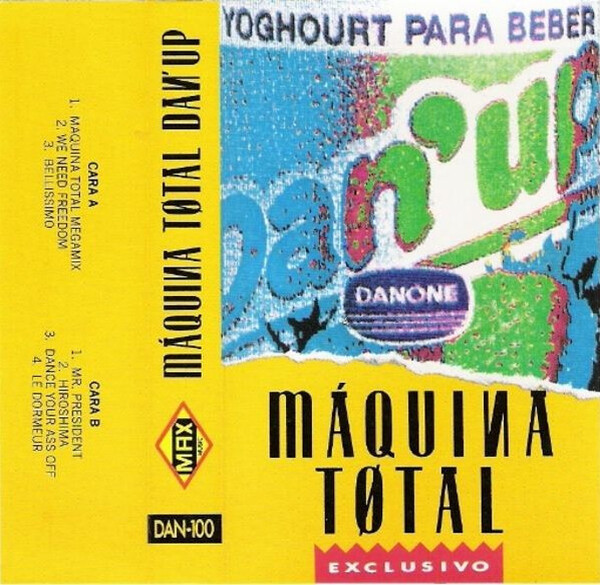
Maquina Total Dan'up - 1992
Cassete promocional de Danone que se podia obtener si tenias suerte al comprar Dan Up. Incluye un megamix realizado Toni Peret y José María Castells, más seis temas cortos .
-
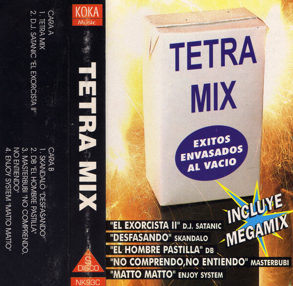
Tetra-mix - 1994
Mezclado y producido por Quique Tejada, este cassete reúne makina y techno en un set continuo con temas como Desfasando, El Exorcista II o Matto Matto,
-
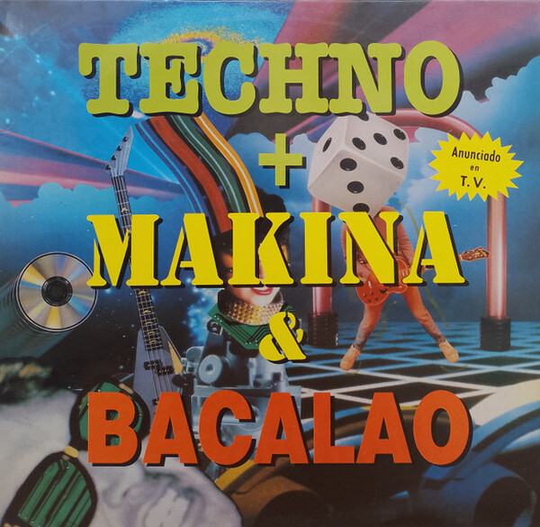
Techno + Makina & Bacalao - 1992
Compilación de música dance lanzada por el sello discográfico español Blanco Y Negro Music. Incluye éxitos de los géneros techno, makina y "bacalao"
-
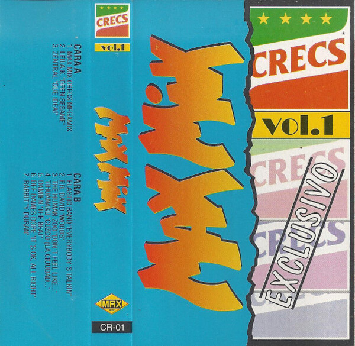
Max Mix Crecs - 1993
Cassete promocional mezclado por Toni Peret y José María Castells para la marca Crecs, que recopila los éxitos dance del momento en un megamix
-
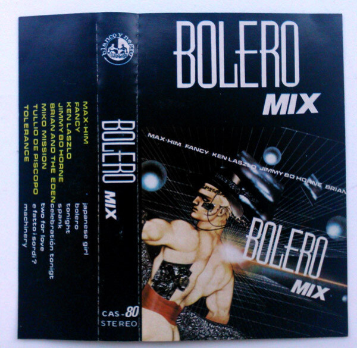
Bolero Mix - 1986
Primer volumen de la mítica saga de megamixes en casete, mezclado por Mike Platinas y Javier Ussía, que reúne en una sola sesión continua grandes éxitos dance, italo-disco y pop de mediados de los 80.
-
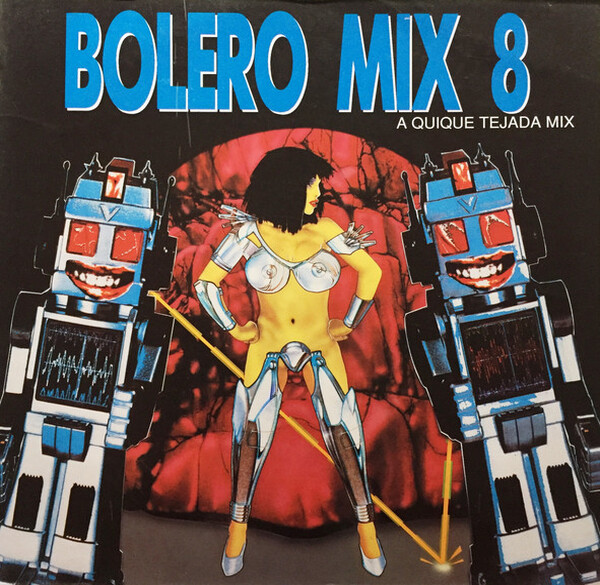
Bolero Mix 8 - 1991
Recopilatorio de la serie Bolero Mix publciada por Blanco y Negro. Contiene un megamix realizado por Quique Tejada